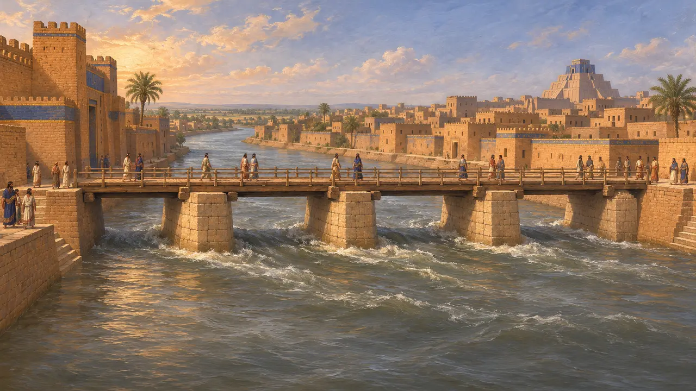
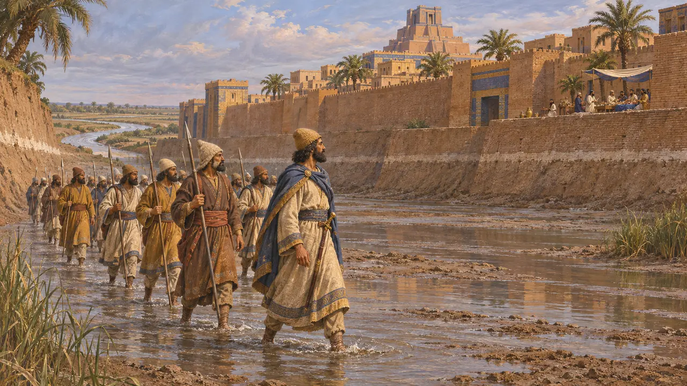
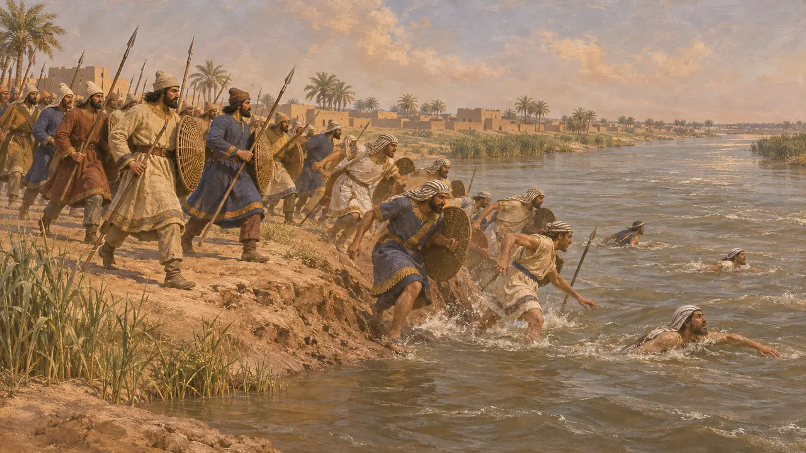
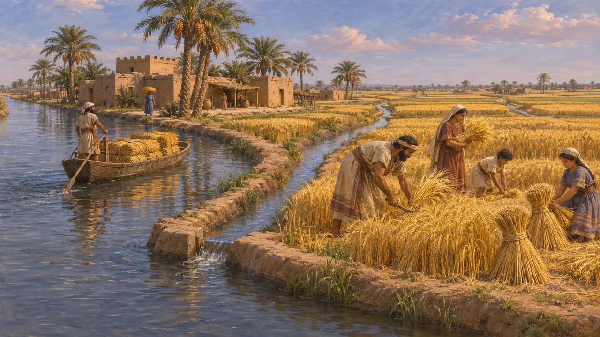

فرات
رود باختری میانرودان که از میان بابل میگذرد، ۵۳۹-۵۲۱ پ.م.
فرات باختریترینِ دو رود بزرگ میانرودان است. از میان بابل میگذشت و آبش آبراهههای بارورترین کشتزارهای آسیا را سیراب میکرد. هرودوت میگوید کوروش در ۵۳۹ با گرداندن آن بابل را گرفت، و داریوش در ۵۲۲ در کرانهٔ آن در زازانا ندینتو-بل را شکست داد.
در بازی: فرات در متنهای مرحلهٔ بگستانه، در نبرد زازانا و در یادداشتهای شریک بازرگانی بابل آمده است.


کوروش و رود
مورد مناقشههرودوت میگوید کوروش فرات را به دریاچهای گرداند و هنگامی که مردم به جشن نشسته بودند، سربازانش را از بستر رود به بابل فرستاد. گاهنامهٔ نبونید تنها میگوید بابل بیجنگ گرفته شد، و استوانهٔ کوروش که مردوک کوروش را با آشتی به شهر درآورد.
Herodotus 1.189-191; Nabonidus Chronicle; Cyrus Cylinder


آبراههها و کشتزارها
روایت باستانیهرودوت میگوید بابلزمین را آبراههها بریده بودند، بزرگترینشان تا دجله کشتیرو بود، و غلهاش دویست و حتی سیصد برابر بر میداد. هزاران گلنبشتهٔ دوران پارس آبراههها، کشتزارهایشان و خاندانهایی را که آنها را اجاره میکردند ثبت کردهاند.
Herodotus 1.193; the Murashu archive
منابع
- Herodotus 1.180-193
- Behistun inscription §19-20
- Nabonidus Chronicle
- Cyrus Cylinder